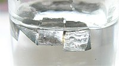

Numero atomico: 3
Massa atomica: 6,941
Temperatura di fusione (°C): 181
Temperatura di ebolizione (°C): 1342
Energia di prima ionizzazione (kj/mol): 513
Elettronegatività (secondo Pauling): 0,98
Densità: 0,53
Numeri di ossidazione: +1
Configurazione elettronica: 1s2, 2s1
Maggiori Informazioni